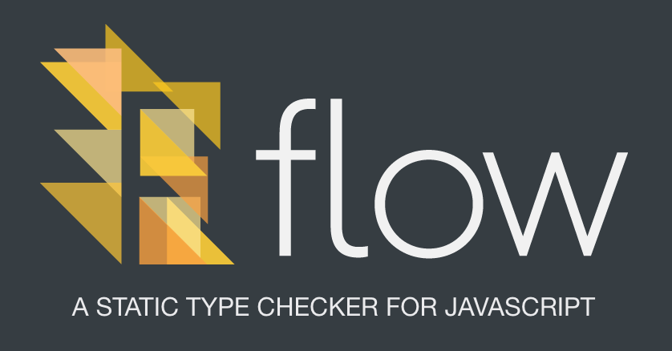

はじめまして
- Yuji Sugiura / @leader22
- フロントエンド・エンジニア at PixelGrid Inc.
- 前々回にイカの話してたやつです
- 最近は仕事でなぜかコードゴルフ⛳してます


// いままで
let eventName: string = 'Node学園';
eventName = 21;
// @flow
let eventName: string = 'Node学園';
eventName = 21; // This type is incompatible with string
0.27.0後の懇親会では是非ともよろしくお願いします！！！
「0からはじめる」というタイトルですが、正確には、
これからはじめる1, 2の人🔰に伝えたい10分間です。

flow-binbabel-plugin-transform-flow-strip-typesbabel-plugin-transform-class-properties
最後のやつが地味に重要。
transform-class-propertiesを使ってない場合、
公式に言われるがままにClassに型をつけた瞬間、
Babelのコンパイルがコケる！
class C {
x: string; // <- コレ
constructor(x) { this.x = x; }
foo() { return this.x; }
}
アプリのコードで一切使ってなくてもコケます😇
.babelrcのpassPerPreset（後述）で先にtransform-flow-strip-typesするtransform-class-properties足すtransform-class-propertiesするしかないpassPerPresetで先にtransform-flow-strip-typesしてもダメこういうツール、環境整備でコケるとまじで心折れる・・。
passPerPresetBabel 6.5から入った機能で、ざーーーっくり言うとプラグイン、プリセットの処理順を指定できる機能。
詳しくは、 http://lealog.hateblo.jp/entry/2016/06/29/212247 に。
// .babelrc
{
passPerPreset: true,
presets: [
{
plugins: [ "babel-plugin-transform-flow-strip-types" ]
},
"es2015",
"react"
]
}
Stage1の機能なんか使いたくないなーと思ったけど、結局コレもEXPERIMENTALな機能やので、
おとなしくtransform-class-propertiesするが吉💦
やるからにはきっちり型つけたい！
@flowコメントをいれるしかしそれが地味に大変で・・。
// 元コード
const FOO = {
1: 'foo',
2: 'bar',
};
// なおした
const FOO = {
'1': 'foo',
'2': 'bar',
};
オブジェクトに数値キーがダメやったり。
// 元コード
function foo(val) {
val = val|0;
// ...
}
// 型付けた（ら怒られた）
function foo(_val: string) {
const val: number = _val|0;
// ...
}
// なおした
function foo(_val: string) {
let val: number = parseInt(_val, 10);
val = isNaN(val) ? 0 : val;
}
ビット演算子でキャストするのもダメ。
息を吸う用に使いまくってた・・・😇
よくあるinput[type=text]のイベントハンドラ。
<input type="text" onChange={this.onChangeInput} />
onChangeInput(ev: Event) {
const action = {
target: this.props.partsName,
text: ev.target.value // ココでエラー
};
this.dispatch('set:text', action);
}
EventTargetにvalueなんかねえよ！って言われる。
// ev.targetはEventTargetであると同時にHTMLInputElement
// そして`value`プロパティがあるのはそっちなので、Dynamic Type Testsして回避する
onChangeInput(ev: Event) {
if (ev.target instanceof HTMLInputElement) {
const action: SetTextAction = {
target: this.props.partsName,
text: ev.target.value
};
this.dispatch('set:text', action);
}
}
他にも似たようなのが色々出てくるが、面倒くさいと思ってはいけない・・(˘ω˘ )
# .flowconfig
[options]
suppress_comment= \\(.\\|\n\\)*\\flow-disable-line
こう書いておくと、
// flow-disable-line
const str: string = 1;
その行のエラーを無視できる・・・！
文言は好きなのにできる。
だいたいのこと書いてるけど困った時は助けてくれない
Flow側で定義済みの型が置いてあるディレクトリ
ドキュメントに載ってない記法が紹介されてる（ただし1年前の記事）
そのドキュメントに載ってない記法が実装されてるぽい箇所（OCaml読めません）
const A = { a: '1', b: 2, c: true };
const { a, b, c, }: { a: string, b: number, c: boolean } = A;
// コレはダメ
const { a: string, b: number, c: boolean, } = A;
公式のDestructuringのページに書いてないからねコレ！
const A: {
a: string, b: number, c: boolean,
} = { a: '1', b: 2, c: true };
さっきとは逆で、型 > 値の順。
ビルトインの型以外に、自分で型を作れる機能。
// 文字列か数値
type StrOrNum = string | number;
// 'A'という文字列 || 'B'という文字列
type StrAorB = 'A' | 'B';
// これらの型を持つObject
type TabItem = {
id: string,
order: number,
name: string,
};
// そんなObjectの配列
type TabItems = TabItem[];
// 違う書き方
type TabItems = Array<TabItem>;
FluxのActionとかをまとめたり。
ドキュメントに載ってない記法シリーズ。
const CARD_TYPES = {
"Diamonds": "Diamonds",
"Clubs": "Clubs",
"Hearts": "Hearts",
"Spades": "Spades"
};
type CardTypes = $Keys<typeof CARD_TYPES>;
としておいて、
const type1: CardTypes = 'Diamonds'; // ok
const type2: CardTypes = 'Fooo'; // error
まぁもちろんEXPERIMENTALなんでしょうね。
0からはじめるFlow Part.1
http://lealog.hateblo.jp/entry/2016/06/21/104558
0からはじめるFlow Part.2
http://lealog.hateblo.jp/entry/2016/06/29/144203
コスパの良いツールだと思うので、Babelれる新規プロジェクトでは前向きに使っていきたい所存。
ただし既存のプロジェクトには・・
使われてないのか、みんな内緒にしてるのか！
tscがもっと速くなったら・・TypeScriptに・・💨
型々してる人！ぜひこのあと🍕🍣教えてください！